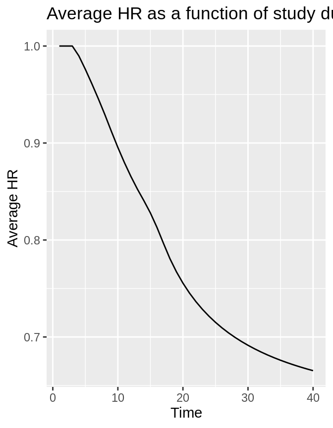
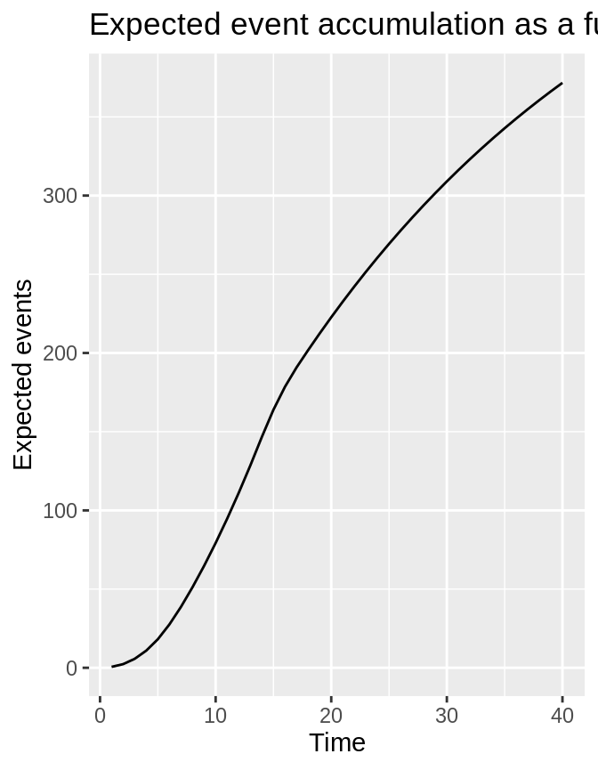
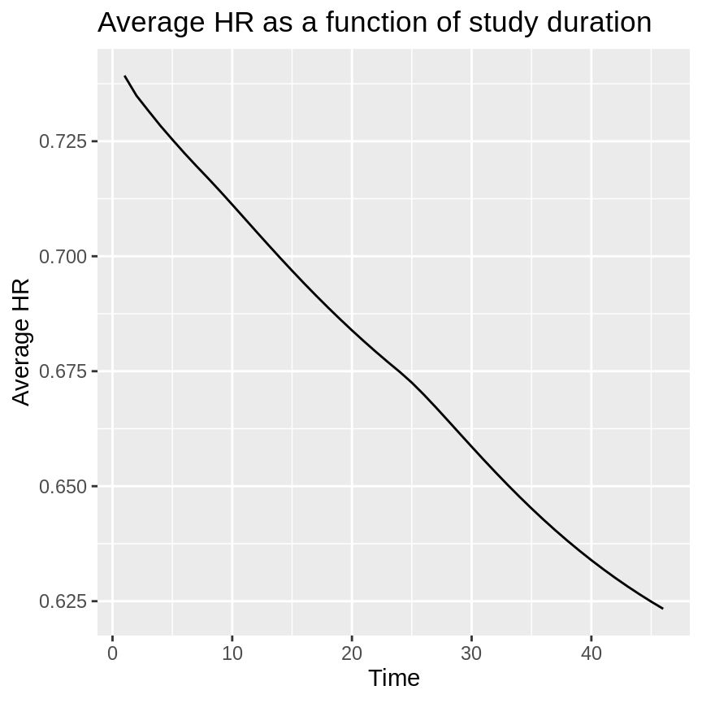

Average hazard ratio and sample size under non-proportional hazards
Source:vignettes/story_ahr_under_nph.Rmd
story_ahr_under_nph.RmdIntroduction
This document demonstrates applications of the average hazard ratio concept in the design of fixed designs without interim analysis. Throughout we consider a 2-arm trial with an experimental and control group and a time-to-event endpoint. Testing for differences between treatment groups is performed using the stratified logrank test. In the above setting, the gsDesign2::AHR() routine provides an average hazard ratio that can be used for sample size using the function gsDesign::nSurv(). The approach assumes piecewise constant enrollment rates and piecewise exponential failure rates with the option of including multiple strata. This approach allows the flexibility to approximate a wide variety of scenarios. We evaluate the approximations used via simulation using the simtrial package; we specifically provide a simulation routine so that any changes specified by the user should be easily incorporated. We consider both non-proportional hazards for a single stratum and multiple strata with different underlying proportional hazards assumptions.
There are two things to note regarding differences between simtrial::simfix() and gsDesign2::AHR():
-
simtrial::simfix()is less flexible in that it requires all strata are enrolled at the same relative rates throughout the trial whereasgsDesign2::AHR()allows, for example, enrollment to start or stop at different times in different strata. In this document, we use the more restrictive parameterization ofsimtrial::simfix()so that we can confirm the asymptotic sample size approximation based ongsDesign2::AHR()by simulation. -
simtrial::simfix()provides more flexibility in test statistics used thangsDesign2::AHR()as documented in the pMaxCombo vignette demonstrating use of Fleming-Harrington weighted logrank tests and combinations of such tests.
Document organization
This vignette is organized as follows:
- Two non-proportional hazards examples are introduced for fixed sample size approximation, one with a single stratum and one with two strata.
- The single stratum design assumes a delayed treatment benefit.
- The stratified example assumes different proportional hazards in 3 strata.
- Each of these examples have the following subsections:
- Decription of the design scenario.
- Deriving an average hazard ratio.
- Deriving sample size based on average hazard ratio.
- Computing and plotting the average hazard ratio as a function of time.
- Simulation to verify that the sample size approximation provides the targeted power.
Each simulation is done with data cutoff performed in 5 different ways:
- Based on targeted trial duration
- Based on targeted minimum follow-up duration only
- Based on targeted event count only
- Based on the maximum of targeted event count and targeted trial duration
- Based on the maximum of targeted event count and targeted minimum follow-up
The method based on waiting to achieve targeted event count and targeted minimum follow-up appears to be both practical and to provide the targeted power.
Intial setup
We begin by setting two parameters that will be used throughout in simulations used to verify accuracy of power approximations; either could be customized for each simulation. First, we set the number of simulations to be performed. You can increase this to improve accuracy of simulation estimates of power.
nsim <- 2000Simulations using the simtrial::simfix() routine below use blocked randomization. We set that here and do not change for individual simulations. Based on balanced randomization in block we set the randomization ratio of experimental to control to 1.
We load packages needed below.
- gsDesign is used for its implementation of the Schoenfeld (1981) approximation to compute the number of events required to power a trial under the proportional hazards assumption.
- dplyr and tibble to work with tabular data and the ‘data wrangling’ approach to coding.
- simtrial to enable simulations.
-
survival to enable Cox proportional hazards estimation of the (average) hazard ratio for each simulation to compare with the approximation provided by the
gsDesign2::AHR()routine that computes an expected average hazard ratio for the trial (Kalbfleisch and Prentice (1981), Schemper, Wakounig, and Heinze (2009)). - Hidden underneath this is the
gsDesign2::eEvents_df()routine that provides expected event counts for each period and stratum where the hazard ratio differs. This is the basic calculation used in thegsDesign2::AHR()routine.
Single stratum non-proportional hazards example
Design scenario
We set up the first scenario design parameters. Enrollment ramps up over the course of the first 4 months follow-up by a steady state enrollment thereafter. This will be adjusted proportionately to power the trial later. The control group has a piecewise exponential distribution with median 9 for the first 3 months and 18 thereafter. The hazard ratio of the experimental group versus control is 1 for the first 3 months followed by 0.55 thereafter.
enrollRates <- tibble::tibble(
Stratum = "All", # Note: this is done differently for multiple strata; see below!
duration = c(2, 2, 10),
rate = c(3, 6, 9)
)
failRates <- tibble::tibble(
Stratum = "All",
duration = c(3, 100),
failRate = log(2) / c(9, 18),
hr = c(1, .55),
dropoutRate = .001
)
totalDuration <- 30Since there is a single stratum, we set strata to the default:
strata <- tibble::tibble(Stratum = "All", p = 1)Computing average hazard ratio
We compute an average hazard ratio using the gsDesign2::AHR() (average hazard ratio) routine. We will modify enrollment rates proportionately below when the sample size is computed. This result is for the given enrollment rates which will be adjusted in our next step. However, since they will be adjusted proportionately with relative enrollment timing not changing, the average hazard ratio will not change. Approximations of statistical information under the null (info0) and alternate (info) hypotheses are provided here. Recall that the parameterization here is in terms of \(\log(HR)\), and, thus the information is intended to approximate 1 over the variance for the Cox regression coefficient for treatment effect; this will be checked with simulation later.
avehr <- AHR(
enrollRates = enrollRates,
failRates = failRates,
totalDuration = as.numeric(totalDuration)
)
avehr %>% gt()| Time | AHR | Events | info | info0 |
|---|---|---|---|---|
| 30 | 0.691405 | 58.13107 | 14.10216 | 14.53277 |
This result can be explained by the number of events observed before and after the first 3 months of treatment in each treatment group.
xx <- AHR(
enrollRates = enrollRates,
failRates = failRates,
totalDuration = as.numeric(totalDuration),
simple = FALSE)
xx %>% gt()| Time | Stratum | t | HR | Events | info | info0 |
|---|---|---|---|---|---|---|
| 30 | All | 0 | 1.00 | 22.24824 | 5.562060 | 5.562060 |
| 30 | All | 3 | 0.55 | 35.88283 | 8.540105 | 8.970708 |
Now we can replicate the geometric average hazard ratio (AHR) computed using the AHR() routine above. We compute the logarithm of each HR above and computed a weighted average weighting by the expected number of events under each hazard ratio. Exponentiating the resulting weighted average gives the geometric mean hazard ratio, which we label as AHR.
| AHR |
|---|
| 0.691405 |
Deriving the design
With this average hazard ratio, we use the call for gsDesign::nEvents() which uses the Schoenfeld (1981) approximation to derive a targeted number of events. All you need for this is the average hazard ratio from above, the randomization ratio (experimental/control), Type I error and Type II error (1 - power).
targetEvents <- nEvents(
hr = avehr$AHR, # average hazard ratio computed above
ratio = 1, # randomization ratio
alpha = .025, # 1-sided Type I error
beta = .1 # Type II error (1-power)
)
targetEvents <- ceiling(targetEvents)
targetEvents
#> [1] 309We also compute proportionately increase the enrollment rates to achieve this targeted number of events; we round up the number of events required to the next higher integer.
# Update enrollRates to obtain targeted events
enrollRates$rate <- ceiling(targetEvents) / avehr$Events * enrollRates$rate
avehr <- AHR(
enrollRates = enrollRates,
failRates = failRates,
totalDuration = as.numeric(totalDuration)
)
avehr %>% gt()| Time | AHR | Events | info | info0 |
|---|---|---|---|---|
| 30 | 0.691405 | 309 | 74.9611 | 77.25 |
We also compute sample size, rounding up to the nearest even integer.
Average hazard ratio and expected event accumulation over time
We examine the average hazard ratio as a function of trial duration with the modified enrollment required to power the trial. We also plot expected event accrual over time; although the graphs go through 40 months, recall that the targeted trial duration is 30 months. A key design consideration is selecting trial duration based on things like the degree of AHR improvement over time versus the urgency of completing the trial as quickly as possible, noting that the required sample size will decrease with longer follow-up.
avehrtbl <- AHR(
enrollRates = enrollRates,
failRates = failRates,
totalDuration = 1:(totalDuration + 10)
)
ggplot(avehrtbl, aes(x = Time, y = AHR)) +
geom_line() +
ylab("Average HR") +
ggtitle("Average HR as a function of study duration") +
scale_x_continuous(breaks = seq(0, 48, 6))
ggplot(avehrtbl, aes(x = Time, y = Events)) +
geom_line() +
ylab("Expected events") +
ggtitle("Expected event accumulation as a function of study duration") +
scale_x_continuous(breaks = seq(0, 48, 6))
Simulation to verify power
We use function simtrial::simfix() to simplify setting up and executing a simulation to evaluate the sample size derivation above. Arguments for simtrial::simfix() are slightly different than the set-up that was used for the gsDesign2::AHR() function used above. Thus, there is some reformatting of input parameters involved. One difference from the gsDesign2::AHR() parameterization in simtrial::simfix() is that block is provided to specify fixed block randomization as opposed to ratio for gsDesign2::AHR().
# do simulations
# Cut at targeted study duration
results1 <- simtrial::simfix(
nsim = nsim,
block = block,
sampleSize = sampleSize,
strata = strata,
enrollRates = enrollRates,
failRates = failRates,
totalDuration = totalDuration,
targetEvents = ceiling(targetEvents),
timingType = 1:5
)
# save(results1, file = './fixutes/results1.Rdata') # Save the dataThe following summarizes outcomes by the data cutoff chosen. Regardless of cutoff chosen, we see that the power approximates the targeted 90% quite well. The statistical information computed in the simulation is computed as one over the simulation variance of the Cox regression coefficient for treatment (i.e., the log hazard ratio).
load("./fixtures/results1.Rdata") # loading the data previously saved
results1$Positive <- results1$Z <= qnorm(.025)
results1 %>%
group_by(cut) %>%
summarise(
Simulations = n(), Power = mean(Positive), sdDur = sd(Duration), Duration = mean(Duration),
sdEvents = sd(Events), Events = mean(Events),
HR = exp(mean(lnhr)), sdlnhr = sd(lnhr), info = 1 / sdlnhr^2
) %>%
kable(digits = 3)| cut | Simulations | Power | sdDur | Duration | sdEvents | Events | HR | sdlnhr | info |
|---|---|---|---|---|---|---|---|---|---|
| Max(min follow-up, event cut) | 2000 | 0.895 | 0.983 | 30.560 | 7.050 | 314.226 | 0.692 | 0.116 | 73.830 |
| Max(planned duration, event cut) | 2000 | 0.895 | 0.910 | 30.551 | 7.090 | 314.164 | 0.692 | 0.116 | 73.943 |
| Minimum follow-up | 2000 | 0.888 | 0.495 | 30.024 | 11.621 | 310.146 | 0.694 | 0.117 | 73.270 |
| Planned duration | 2000 | 0.886 | 0.000 | 30.000 | 11.720 | 309.958 | 0.694 | 0.117 | 72.993 |
| Targeted events | 2000 | 0.880 | 1.595 | 29.824 | 0.000 | 309.000 | 0.694 | 0.118 | 71.832 |
The column HR above is the exponentiated mean of the Cox regression coefficients (geometric mean of HR). We see that the HR estimate below matches the simulations above quite well. The column info here is the estimated statistical information under the alternate hypothesis, while info0 is the estimate under the null hypothesis. The value of info0 is 1/4 of the expected events calculated below. In this case, the information approximation under the alternate hypothesis appears slightly small, meaning that the asymptotic approximation used will overpower the trial. Nonetheless, the approximation for power appear quite good as noted above.
| Time | AHR | Events | info | info0 |
|---|---|---|---|---|
| 30 | 0.691405 | 309 | 74.9611 | 77.25 |
Different proportional hazards by strata
Design scenario
We set up the design scenario parameter. We are limited here to simultaneous enrollment of strata since the simtrial::simfix() routine uses simtrial::simPWSurv() which is limited to this scenario. We specify three strata:
- High risk: 1/3 of the population with median time-to-event of 6 months and a treatment effect hazard ratio of 1.2.
- Moderate risk: 1/2 of the population with median time-to-event of 9 months and a hazard ratio of 0.2.
- Low risk: 1/6 of the population that is essentially cured in both arms (median 100, HR = 1).
strata <- tibble::tibble(Stratum = c("High", "Moderate", "Low"), p = c(1 / 3, 1 / 2, 1 / 6))
enrollRates <- tibble::tibble(
Stratum = c(array("High", 4), array("Moderate", 4), array("Low", 4)),
duration = rep(c(2, 2, 2, 18), 3),
rate = c((1:4) / 3, (1:4) / 2, (1:4) / 6)
)
failRates <- tibble::tibble(
Stratum = c("High", "Moderate", "Low"),
duration = 100,
failRate = log(2) / c(6, 9, 100),
hr = c(1.2, 1 / 3, 1),
dropoutRate = .001
)
totalDuration <- 36Computing average hazard ratio
Now we transform the enrollment rates to account for stratified population.
| Time | AHR | Events | info | info0 |
|---|---|---|---|---|
| 36 | 0.642733 | 53.41293 | 12.76869 | 13.35323 |
We examine the expected events by stratum.
| Time | Stratum | t | HR | Events | info | info0 |
|---|---|---|---|---|---|---|
| 36 | High | 0 | 1.2000000 | 25.666089 | 6.4144810 | 6.4165222 |
| 36 | Low | 0 | 1.0000000 | 1.996737 | 0.4991842 | 0.4991842 |
| 36 | Moderate | 0 | 0.3333333 | 25.750105 | 5.8550281 | 6.4375262 |
Getting the average of log(HR) weighted by Events and exponentiating, we get the overall AHR just derived.
xx %>%
ungroup() %>%
summarise(lnhr = sum(Events * log(HR)) / sum(Events), AHR = exp(lnhr)) %>%
gt()| lnhr | AHR |
|---|---|
| -0.4420259 | 0.642733 |
Deriving the design
We derive the sample size as before. We plan the sample size based on the average hazard ratio for the overall population and use that across strata. First, we derive the targeted events:
targetEvents <- gsDesign::nEvents(
hr = ahr2$AHR,
ratio = 1,
alpha = .025,
beta = .1
)
targetEvents <- ceiling(targetEvents)
targetEvents
#> [1] 216Next, we adapt enrollment rates proportionately so that the trial will be powered for the targeted failure rates and follow-up duration.
enrollRates <- enrollRates %>% mutate(rate = targetEvents / ahr2$Events * rate)
AHR(
enrollRates = enrollRates,
failRates = failRates,
totalDuration = totalDuration
) %>% gt()| Time | AHR | Events | info | info0 |
|---|---|---|---|---|
| 36 | 0.642733 | 216 | 51.63614 | 54 |
The targeted sample size, rounding up to an even integer, is:
Average HR and expected event accumulation over time
Plotting the average hazard ratio as a function of study duration, we see that it improves considerably over the course of the study. We also plot expected event accumulation. As before, we plot for 10 months more than the planned study duration of 36 months to allow evaluation of event accumulation versus treatment effect for different trial durations.
avehrtbl <- AHR(
enrollRates = enrollRates,
failRates = failRates,
totalDuration = 1:(totalDuration + 10)
)
ggplot(avehrtbl, aes(x = Time, y = AHR)) +
geom_line() +
ylab("Average HR") +
ggtitle("Average HR as a function of study duration") +
scale_x_continuous(breaks = seq(0, 48, 6))
Simulation to verify power
We change the enrollment rates by stratum produced by gsDesign::nSurv() to overall enrollment rates needed for simtrial::simfix().
er <- enrollRates %>%
group_by(Stratum) %>%
mutate(period = 1:n()) %>%
group_by(period) %>%
summarise(rate = sum(rate), duration = last(duration))
er %>% gt()| period | rate | duration |
|---|---|---|
| 1 | 4.043965 | 2 |
| 2 | 8.087929 | 2 |
| 3 | 12.131894 | 2 |
| 4 | 16.175858 | 18 |
Now we simulate and summarize results. Once again, we see that the expected statistical information from the simulation is greater than what would be expected by the Schoenfeld approximation which is the expected events divided by 4.
results2 <- simtrial::simfix(
nsim = nsim,
block = block,
sampleSize = sampleSize,
strata = strata,
enrollRates = er,
failRates = failRates,
totalDuration = as.numeric(totalDuration),
targetEvents = as.numeric(targetEvents),
timingType = 1:5
)
# save(results2, file = './fixtures/results2.Rdata') # Save data
load("./fixtures/results2.Rdata")
results2$Positive <- (pnorm(results2$Z) <= .025)
results2 %>%
group_by(cut) %>%
summarize(
Simulations = n(), Power = mean(Positive), sdDur = sd(Duration), Duration = mean(Duration),
sdEvents = sd(Events), Events = mean(Events),
HR = exp(mean(lnhr)), sdlnhr = sd(lnhr), info = 1 / sdlnhr^2
) %>%
kable(digits = 3)| cut | Simulations | Power | sdDur | Duration | sdEvents | Events | HR | sdlnhr | info |
|---|---|---|---|---|---|---|---|---|---|
| Max(min follow-up, event cut) | 2000 | 0.895 | 1.751 | 36.952 | 4.899 | 219.416 | 0.642 | 0.137 | 53.339 |
| Max(planned duration, event cut) | 2000 | 0.892 | 1.529 | 36.951 | 4.988 | 219.411 | 0.641 | 0.136 | 53.724 |
| Minimum follow-up | 2000 | 0.886 | 1.139 | 36.051 | 8.595 | 215.994 | 0.644 | 0.137 | 53.503 |
| Planned duration | 2000 | 0.882 | 0.000 | 36.000 | 8.918 | 215.713 | 0.644 | 0.137 | 53.530 |
| Targeted events | 2000 | 0.879 | 2.363 | 36.060 | 0.000 | 216.000 | 0.644 | 0.138 | 52.448 |
Finally, compare the simulation results above to the asymptotic approximation below. The achieved power by simulation is just below the targeted 90%; noting that the simulation standard error is 0.006, the asymptotic approximation is quite good. Using the final cutoff that requires both the targeted events and minimum follow-up seems a reasonable convention to preserved targeted design power.
| Time | AHR | Events | info | info0 |
|---|---|---|---|---|
| 36 | 0.642733 | 216 | 51.63614 | 54 |
References
Kalbfleisch, John D, and Ross L Prentice. 1981. “Estimation of the Average Hazard Ratio.” Biometrika 68 (1): 105–12.
Schemper, Michael, Samo Wakounig, and Georg Heinze. 2009. “The Estimation of Average Hazard Ratios by Weighted Cox Regression.” Statistics in Medicine 28 (19): 2473–89.
Schoenfeld, David. 1981. “The Asymptotic Properties of Nonparametric Tests for Comparing Survival Distributions.” Biometrika 68 (1): 316–19.